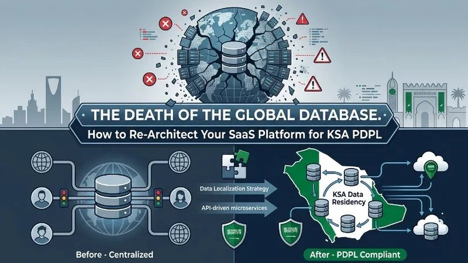
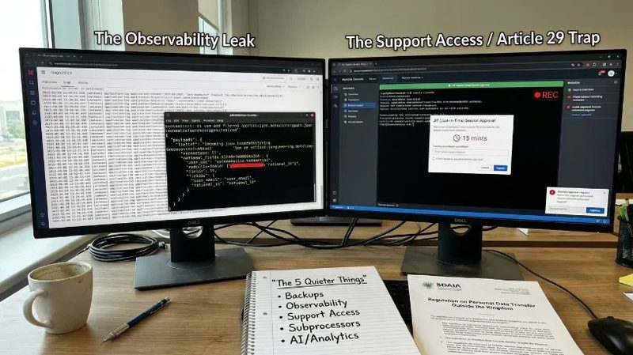

For roughly fifteen years, SaaS architecture had one answer to the question of where customer data lives: a single multi-tenant database in one cloud region, usually somewhere in Virginia or Frankfurt, serving every customer on the planet. It was cheap, it was simple, and for most of that period nobody’s procurement team ever asked about it.
Saudi Arabia has ended that arrangement. If your platform serves customers in the Kingdom, the single global database has slipped from sensible default to standing liability, and the pressure is arriving from more than one direction at once.
We are Software Disruption, a Dubai-based AI and data engineering company with delivery teams in Riyadh and Jeddah and more than ten years of platform work across the KSA and Saudi Arabia. Re-architecting for Saudi data rules now comes up in almost every serious platform conversation we have in the Kingdom, so this post lays out what the law actually demands, the four architectures that replace the global database, and the parts of the migration that keep catching teams off guard.
Once that tag exists, storage rules, access rules, retention windows, and transfer reviews can all apply specifically to that data. Without it, everything sits in one pool, and “we treat everyone the same” isn’t an answer PDPL accepts.

PDPL treats every cross-border flow as an exception you have to justify
The Personal Data Protection Law entered into force on 14 September 2023 under Royal Decree M/19, and the one-year grace period closed on 14 September 2024. Enforcement is no longer theoretical. SDAIA’s committees had issued forty-eight decisions confirming violations by mid January 2026, administrative fines run up to SAR 5 million per violation and double for repeat offences, and violations involving sensitive data can reach criminal territory with up to two years of imprisonment.
The transfer rules are where the law meets your architecture. SDAIA issued an amended Regulation on Personal Data Transfer Outside the Kingdom on 1 September 2024, together with its own standard contractual clauses. The shape will feel familiar if you have lived through GDPR: a transfer can rest on an adequacy decision, or on an appropriate safeguard such as the Saudi SCCs, binding common rules, or a certification.
Two details make this harder than the GDPR comparison suggests. First, SDAIA has not published an adequacy list, so as of mid-2026 there is no country you can transfer to on adequacy alone; every flow needs a safeguard. Second, relying on a safeguard triggers a transfer risk assessment, and the guideline SDAIA published in February 2025 spells out what that assessment must cover: the purpose of the transfer, its geographic scope, the safeguard itself, the recipient’s ability to protect the data, and evidence that you are moving the minimum data necessary.
Read that last requirement as an engineer rather than a lawyer. Minimisation across borders is an architectural property. A contract cannot supply it if your schema replicates everything everywhere by design. A platform whose primary Postgres, backups, logs and analytics warehouse all sit in eu-west-1 is making one large, continuous, maximal transfer, and every risk assessment you write has to defend that fact.
The regulator is only one of three pressures pushing data into the Kingdom
PDPL sets the legal floor. In practice, two other forces localise data faster than SDAIA does.
The first is sector regulation
SDAIA has delegated PDPL supervision of financial institutions to SAMA, and SAMA-regulated clients bring their own hosting expectations into every vendor conversation; if your platform touches banking or insurance workflows, in-Kingdom hosting stops being a debate.
Government and semi-government buyers add NCA cybersecurity controls and CST cloud classification requirements on top of that. None of these bodies waits for your subprocessor list to be tidy.
They ask where the database is
On the RFPs we see from Riyadh, data residency sits in the first block of the security annex, ahead of SSO and ahead of uptime commitments. A vendor answering “Frankfurt, with SCCs” rarely gets struck out on legal grounds. The buyer’s compliance team simply scores them below the competitor who answered “Riyadh” and spared everyone a transfer assessment. We have watched a deal sit for a quarter on this single line item while everything else in the evaluation was already agreed.
Put the three together and the pattern becomes obvious
Even where a lawyer can construct a compliant cross-border flow, the commercial cost of defending it, deal after deal and audit after audit, eventually exceeds the engineering cost of moving the data. The arithmetic killed the global database well before any regulation formally banned it.
Four architectures can replace it, at very different prices
When we run this exercise with clients, the options collapse into four patterns. Each one draws the line between “data that stays in the Kingdom” and “everything else” in a different place.
| Pattern | What lives in KSA | Where it fits | The cost you feel |
|---|---|---|---|
| Full regional stack | Everything: app, database, storage, backups, logs | SAMA-adjacent deals, government work, sensitive data at scale | Running a second production estate, permanently |
| Regional data plane, global control plane | Personal data stores, object storage, backups; config and billing metadata stay global | Most B2B SaaS platforms | Untangling which “metadata” is actually personal data |
| Tenant-pinned cells | Each Saudi tenant’s cell, pinned at signup | Platforms already sharded or cell-based | A routing layer that becomes core infrastructure |
| Dedicated single-tenant (BYOC) | A full stack inside the customer’s own KSA cloud account | Anchor accounts and regulated enterprises | Operating a fleet of snowflake environments |
The full regional stack is the cleanest answer a compliance reviewer will ever read and the heaviest thing your platform team will ever run. It only stays sane if your infrastructure is genuinely code: one Terraform estate, one deployment pipeline, region as a parameter. If deploying your platform still involves a wiki page and a senior engineer’s memory, fix that first.
The split between a regional data plane and a global control plane is where most platforms land, and the fights are all definitional. Tenant configuration sounds harmless until you notice the admin email addresses inside it. Billing records name real people. Feature flags keyed on user IDs count as personal data under PDPL’s broad definition. Our working rule in DevOps and cloud engagements is blunt: anything carrying an identifier travels with the data plane, and the control plane gets redesigned until that statement is true.
Tenant-pinned cells suit platforms that are already shared. The tenant’s region becomes a property set at signup, a router sends every request to the right cell, and residency turns into a routing table entry rather than a migration. Getting there from a shared monolithic database is real surgery though, so this pattern rewards teams that made the cell decision years ago for scaling reasons.
Dedicated single-tenant deployments win the large regulated accounts and quietly punish your on-call rota. Version drift across customer-owned environments is the tax. Automated upgrade pipelines are the only known painkiller.
The migration breaks in places that never appear on the architecture diagram

Moving the primary database is the visible half of the project. In our experience the schedule slips on five quieter things.
- Backups and disaster recovery come first: Point-in-time recovery snapshots and cross-region replicas copy personal data out of the Kingdom automatically, because that is exactly what you configured them to do in 2019. Your DR pair has to live in-country or the whole exercise unravels, which is why the availability zone count on the local cloud regions was the first thing serious teams checked.
- Observability is the second: Logs and traces carry email addresses, national IDs, sometimes whole request payloads, and most platforms ship all of it to a log platform hosted in the US.
- That pipeline is a transfer: The realistic options are scrubbing identifiers at the agent before anything leaves the box, keeping a regional log store for anything payload-shaped.
- Self-hosting the stack in-region: Budget properly for this one; observability re-plumbing surprises people almost as reliably as observability bills do.
Support access is the trap nobody sees coming, because it involves no servers at all. Article 29 of the PDPL covers transferring personal data or disclosing it to a party outside the Kingdom, and a support engineer in another country opening a production console session is a disclosure outside the Kingdom.
Moving the database to Riyadh achieves little if the people who can query it sit anywhere. The fixes are organisational as much as technical: in-region coverage for data-touching support work, just-in-time access with approvals and session recording for everyone else, and a break-glass procedure you could show an auditor without wincing.
Then there is the subprocessor list, which is where these projects go to die. Transactional email, product analytics, error tracking, the CRM enrichment tool someone in marketing connected in 2022. Each of them receives personal data, so each becomes a transfer needing a safeguard and a line in the risk assessment. Expect to cut several. The honest test per vendor: would we sign the Saudi SCCs with them and defend it, or is this tool simply not worth the paperwork?
Finally, analytics and AI. A single global warehouse feeding company-wide dashboards conflicts directly with residency. The workable pattern is regional processing with only aggregated or properly anonymised rollups flowing upstream, and the distinction carries weight because SDAIA has published guidance on exactly this point: pseudonymised data is still personal data, anonymized data falls out of scope, and the bar for “anonymised” sits higher than most teams assume.
The same logic hits AI features. A prompt sent to a US-hosted model API transfers whatever personal data rides inside it, so either the model endpoint serves from inside the Kingdom, or a redaction layer strips identifiers before the call, or the feature waits. We now design data pipelines and AI features around this constraint from day one, and doing it up front costs a fraction of retrofitting it under a customer deadline.
What you can actually rent inside the Kingdom in 2026
The infrastructure side of this story has improved considerably. Google Cloud has operated a Saudi region since late 2023, and Oracle, Huawei and Alibaba run local regions as well. AWS opened its Saudi region, me-central-2 in Riyadh, in early 2026 with three availability zones, backed by an investment commitment of more than five billion dollars announced back in 2024. Microsoft’s dedicated Azure region for the Kingdom was still in the pipeline at the time of writing, though Azure workloads are common here through hybrid arrangements.
One practitioner warning before you assume parity with your current region: new regions launch with a subset of managed services, and the gap lands exactly where it hurts. Check the service availability matrix for every managed database, queue and ML endpoint on your bill of materials before committing dates to anyone. In the KSA landing zones we scope, that matrix check is step one, because a single missing managed service can add a quarter to a migration.
Start from the data map and let it set the order of work
Teams that start with infrastructure end up moving the wrong things first. The sequence that works:
- Build the data map: Every store, every pipeline, every third party, classified as personal, sensitive or neither. This document later becomes your record of processing and the raw material for every risk assessment, so it earns its keep twice.
- Draw the split line: Decide, field by field where necessary, what must live in-Kingdom and what can lawfully cross borders under the Saudi SCCs with a defensible assessment behind it.
- Choose the pattern from the table above, then prove it with one real tenant before scaling the approach.
- Land the core: primary database, object storage, backups and DR, all in-region.
- Chase the long tail: logging, support access, the subprocessor cull, the analytics split.
- Close the governance loop: appoint a data protection officer if you meet the triggers (large-scale processing of sensitive data and continuous cross-border transfers are among them), register on SDAIA’s National Data Governance Platform, and assemble the evidence pack, because the Saudi enterprise buyers who forced this migration will ask to see it.
For a mid-sized B2B platform this typically runs two to three quarters, and the long tail consumes more of that time than the database move itself. The work sits at the intersection of legal, infrastructure and product, which is why we treat it as a digital transformation programme with an owner and a budget rather than a ticket in the platform backlog.
Nobody actually chose the single global database. It accumulated during an era when the location of a row carried no legal weight. In Saudi Arabia that era ended on a specific date, the enforcement record confirms it, and the platforms treating residency as a design input are already winning the deals that residency-as-an-afterthought keeps losing.
We help SaaS teams work through exactly this: mapping the data, choosing the pattern, building the KSA landing zone and re-plumbing the pipelines around it, with honest advice about which corners can be cut and which ones SDAIA will eventually find. Ready to re architect for the Kingdom before your next enterprise deal forces the timeline? Talk to us and we will walk through your data map together.